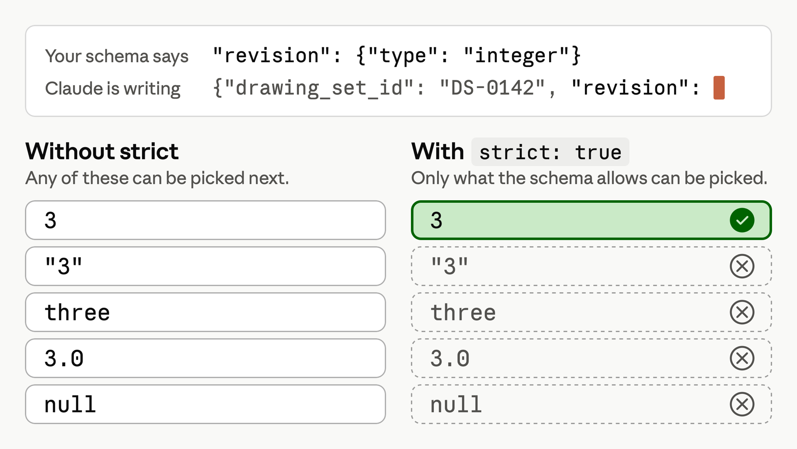

Strict tool use: перестаньте отклонять свои же вызовы
Чему научитесь
Видео 4:30 и текст урока
К концу урока вы сможете:
- объяснить, как
strict: trueограничивает выбор токенов с помощью грамматики и почему благодаря этому вызов инструмента совпадает со схемой; - оформить строгий инструмент: флаг
strictна верхнем уровне определения и"additionalProperties": falseу каждого объекта; - генерировать схему из валидатора (класса Pydantic или схемы Zod), чтобы схема и бэкенд не расходились;
- учитывать ограничения strict: границы значений, общие лимиты на запрос, случаи несовпадения со схемой и модели, не принимающие принудительный
tool_choice.
Видео и текст урока.
Если ваш бэкенд отклоняет вызов инструмента, который сформировал сам Claude, решение — strict tool use. В видео его включают для одного инструмента в Meridian, вымышленной инженерно-консалтинговой компании, и прогоняют одни и те же 100 запросов сначала без strict, потом со strict.
Демонстрация в этом видео записана в сентябре 2026 года и проводилась на Claude Haiku 4.5 (claude-haiku-4-5). На более новых моделях результаты могут отличаться.
Обычно Claude соблюдает input_schema инструмента, но по умолчанию ничто этого не гарантирует. Поэтому ваш бэкенд иногда отклоняет вызов, сделанный Claude, — во входных данных вызова встречается одно из двух:
- строка
"2"вместо целого числа2; - пропущенное обязательное поле.
Strict tool use это исправляет. Один флаг, strict: true, приводит входные данные, которые пишет Claude, в соответствие с вашей схемой.
В Meridian ассистент с помощью инструмента queue_stamp_request ставит комплекты чертежей в очередь на заверение печатью лицензированного инженера. Валидатор Meridian — это код, который проверяет каждый вызов инструмента. Без strict он отклоняет 79 запросов из 100. Со strict и схемой, сгенерированной из валидатора, — ни одного.
Как работает strict tool use
Когда указан strict: true, API сначала компилирует вашу JSON Schema в грамматику. Грамматика — это набор правил, которые в каждой точке входных данных определяют, какие токены могут идти дальше. Затем каждый раз, когда Claude выбирает следующий токен вызова инструмента, он может выбрать только токен, который разрешает грамматика. Это называется сэмплированием, ограниченным грамматикой (grammar-constrained sampling).

strict: true выбрать можно только токены, которые разрешает схема, поэтому целочисленное поле получает целое число.Вот определение инструмента Meridian в сокращённом виде. Для strict нужны две его строки: сам флаг и настройка, которой этот флаг требует.
{
"name": "queue_stamp_request",
"description": "Queues a drawing set for a professional engineer's stamp.",
"strict": true,
"input_schema": {
"type": "object",
"properties": {
"drawing_set_id": {"type": "string"},
"revision": {"type": "integer"}
},
"required": ["drawing_set_id", "revision"],
"additionalProperties": false
}
}
"strict": true— это флаг. Он стоит на верхнем уровне, рядом сname,descriptionиinput_schema, то есть вне схемы."additionalProperties": false— это настройка. Она означает, что во входных данных не может быть поля, которого нет в схеме, и strict требует её у каждого объекта.
Стройте схему из валидатора
Strict tool use приводит входные данные Claude в соответствие с вашей схемой, поэтому схема должна требовать того же, что и валидатор. Когда схему пишут вручную, схема и валидатор со временем расходятся. Тогда вызов инструмента может соответствовать схеме и всё равно быть отклонён. В Meridian написанная вручную схема описывала номер лицензии как обычную строку без шаблона. Поэтому "PE 46196" прошёл проверку по схеме, но не прошёл валидатор, который требует PE- и пять цифр.
Запишите правила один раз — в валидаторе — и генерируйте схему из него. В Python валидатором обычно служит класс Pydantic. В TypeScript его обычно пишут на Zod.
Ниже — класс Pydantic StampRequest из Meridian вместе с кодом, который его использует, а затем схема, которую возвращает StampRequest.model_json_schema(). Каждый комментарий # ... заменяет пропущенный код, а в схеме показан только номер лицензии.
class StampRequest(BaseModel):
model_config = {"extra": "forbid"}
# ...
pe_license_number: str | None = Field(pattern=r"^PE-\d{5}$")
# ...
stamp_tool = {
# ...
"input_schema": StampRequest.model_json_schema(),
"strict": True,
}
stamp_request = StampRequest.model_validate(call.input)
{
"additionalProperties": false,
"properties": {
"pe_license_number": {
"anyOf": [
{"pattern": "^PE-\\d{5}$", "type": "string"},
{"type": "null"}
],
"title": "Pe License Number"
}
}
}
"extra": "forbid"превращается в"additionalProperties": false— ту самую настройку, которой требует strict.str | Noneпревращается вanyOf: номер лицензии — либо строка с этимpattern, либо null.model_validate()проверяетcall.input, то есть входные данные, которые написал Claude, по тому же классу.
Сравните прогоны без strict и со strict
Тест Meridian отправляет Claude Haiku 4.5 сто заявок на заверение, написанных обычным языком, вместе с инструментом queue_stamp_request, а StampRequest проверяет каждый вызов инструмента. Одни и те же 100 запросов прогоняют дважды: сначала с написанной вручную схемой и без strict, затем со сгенерированной схемой и со strict.
Воспроизведите оба прогона ниже.
На странице урока здесь интерактивная симуляция. Она проигрывает записанный тест: 100 вызовов инструмента для заявок на заверение сначала с написанным вручную определением и без strict, потом со сгенерированной схемой и со strict, — и показывает, сколько вызовов валидатор отклонил в каждом прогоне. Её вывод: схема, сгенерированная из валидатора, вместе со strict tool use приводит вызовы Claude к формату, которого ждёт ваш бэкенд.
Симуляция проигрывает два записанных прогона Meridian; Claude при этом ничего не отправляется. Сначала запросы отправляют без strict, затем strict включают и отправляют их снова. Запрос в симуляции:
model—claude-haiku-4-5;tool_choice—{"type": "any"};messages— по одной заявке на заверение для каждого вызова инструмента, 100 вызовов за прогон;tools— переключатель strict (сначала Off); если его включить, он добавляетstrict: trueи заменяет схему на сгенерированную из класса Pydantic.
Определение инструмента в прогоне без strict:
{
"name": "queue_stamp_request",
"input_schema": {
"properties": {
…
"pe_license_number": {
"type": "string",
"description": "Stamping engineer's license number."
}
},
…
},
…
}
Каждая строка «…» заменяет пропущенные части определения.
Валидатор бэкенда требует, чтобы pe_license_number соответствовал ^PE-\d{5}$.
После отправки симуляция показывает итог каждого прогона: без strict отклонено 79 вызовов из 100, со strict: true — ни одного.
pattern в схеме задаёт допустимый формат, а strict заставляет Claude его придерживаться.
Strict управляет формой входных данных, но не может подставить факт, которого в запросе не было. В 28 запросах из 100 лицензия вообще не упоминается. Сгенерированная схема разрешает null для номера лицензии, и во всех 28 случаях вернулся null.
Ограничения strict tool use
Шесть вещей, которые нужно знать (на ноябрь 2026 года):
- Не помещайте в схему защищённую медицинскую информацию (PHI). Скомпилированные схемы не получают той же защиты PHI, что промпты и ответы, поэтому не допускайте PHI в именах свойств, значениях
enumиconst, а также в выраженияхpattern. - Границы не поддерживаются. Запрос, в схеме которого есть
minimum,maximum,minLengthилиmaxLength, возвращает ошибку 400. Проверяйте границы в функции-валидаторе, например в@field_validatorиз Pydantic, и указывайте их в описании поля. - Лимиты общие для всех инструментов. В одном запросе может быть не больше 20 строгих инструментов. На все эти инструменты вместе допускается не больше 24 необязательных параметров. Кроме того, в запросе может быть не больше 16 параметров с
anyOfили массивом типов — именно их порождает поле, допускающее null, вродеstr | None. - Входные данные всё же могут не совпасть со схемой. Так бывает после отказа, когда ответ обрезан по лимиту
max_tokens, или когда строка изenumилиconstвозвращается с другим регистром букв. - Некоторые модели отклоняют принудительный вызов инструмента. Значение
anyилиtoolвtool_choiceпринуждает модель вызвать инструмент. На Claude Fable 5.2, Claude Mythos 5.2, Claude Opus 5.5, Claude Sonnet 5.5, Claude Fable 5.1 и Claude Mythos 5.1 такой запрос возвращает ошибку 400. На этих моделях оставляйтеtool_choiceравнымauto— это значение по умолчанию. - Programmatic tool calling не работает со строгими инструментами. При программном вызове инструментов Claude пишет код, который вызывает ваши инструменты. О нём рассказывает урок 8.
Главное
strict: trueприводит входные данные инструмента в соответствие со схемой — кроме случаев отказа, обрезанного ответа или строки изenumилиconst, у которой изменился регистр.- Генерируйте схему из валидатора, например из класса Pydantic.
- Не задавайте границы в схеме и считайте инструменты, необязательные параметры и параметры, допускающие null, по всему запросу целиком.
Дальше
Следующий урок — «Параллельные вызовы инструментов: меньше задержка»: Claude может запросить несколько вызовов инструментов в одном ответе, а ваш код — выполнить их одновременно, и пользователю не придётся ждать каждый вызов по очереди.
Оригинал урока: Strict tool use: Stop rejecting your own calls.